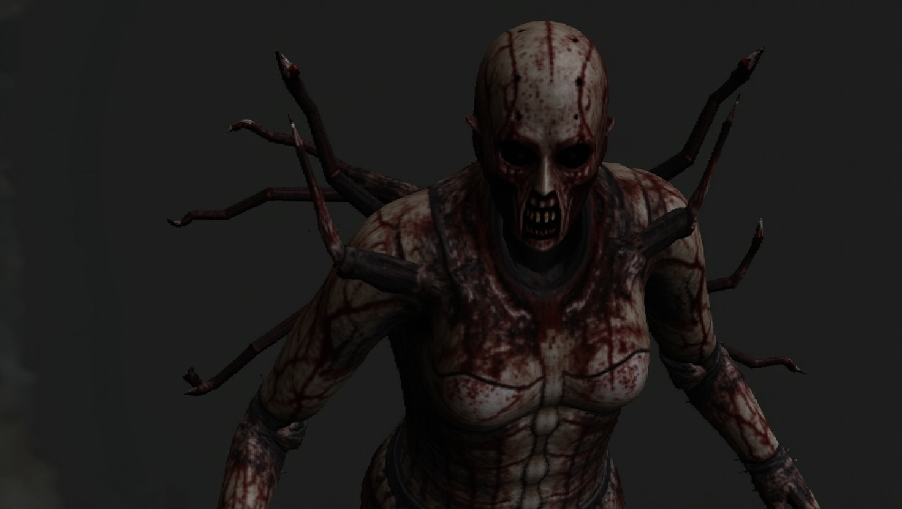
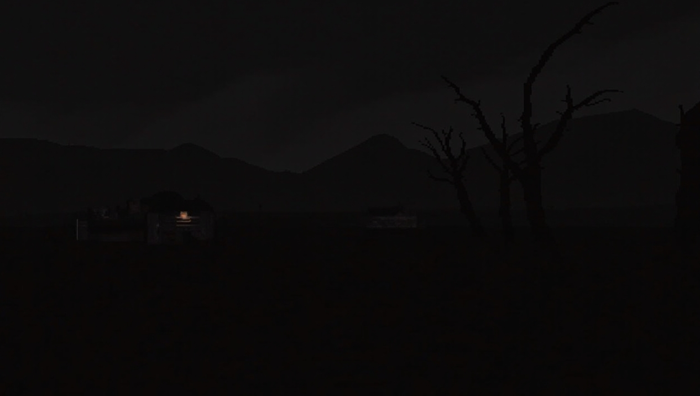
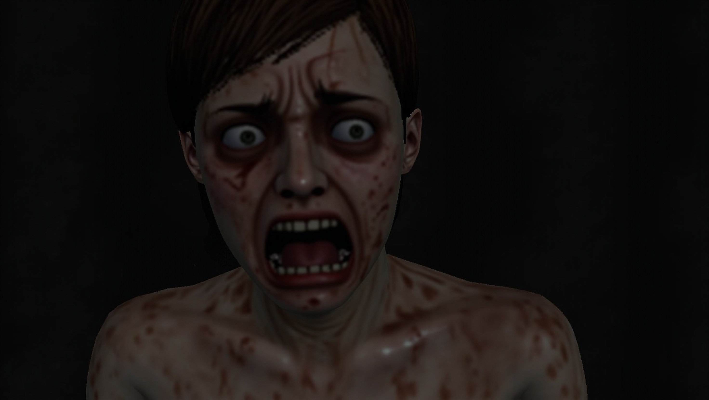
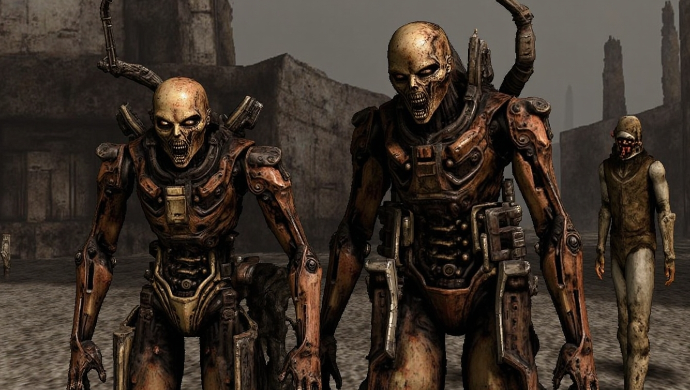
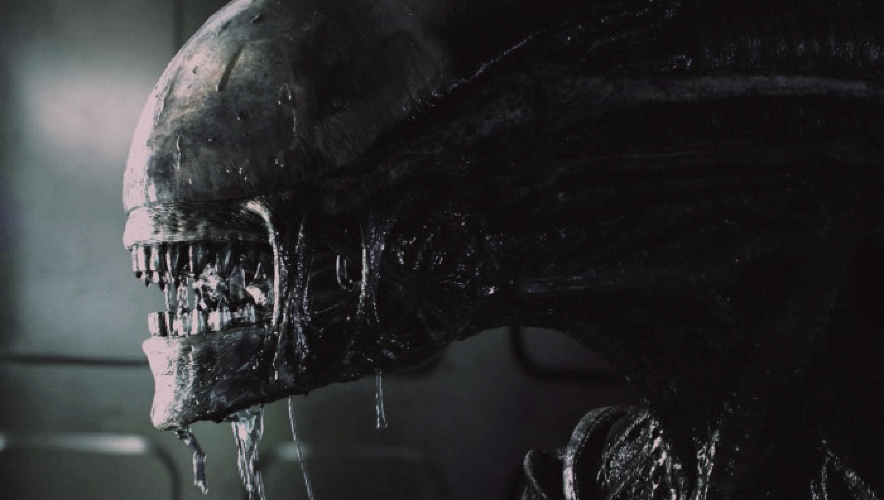
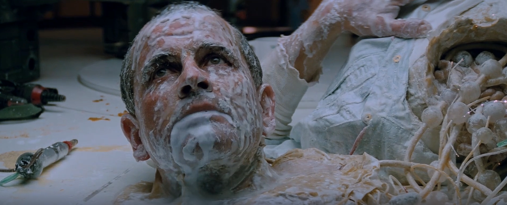

С развитием технологий роботы становятся всё более человекоподобными. Они способны выражать эмоции, имитировать речь и поведение человека. Наблюдение за этим вызывает у человека реакцию тревоги, основанную на особенностях восприятия и глубинных механизмах психики.
Психолог Масахиро Мори описал феномен, получивший название «зловещая долина». Согласно его наблюдениям, при увеличении сходства робота с человеком уровень комфорта в восприятии растёт до определённой границы, после которой возникает внезапное ощущение отвращения и страха. Причиной становится нарушение способности мозга однозначно классифицировать объект: человек это или искусственное нечто. Возникает когнитивный конфликт, сходный с реакцией на изображения смерти или неестественного лица. Роботы, воспроизводящие признаки жизни, но лишённые живой сути, вызывают у человека отторжение.

Психолог Масахиро Мори описал феномен, получивший название «зловещая долина». Согласно его наблюдениям, при увеличении сходства робота с человеком уровень комфорта в восприятии растёт до определённой границы, после которой возникает внезапное ощущение отвращения и страха. Причиной становится нарушение способности мозга однозначно классифицировать объект: человек это или искусственное нечто. Возникает когнитивный конфликт, сходный с реакцией на изображения смерти или неестественного лица. Роботы, воспроизводящие признаки жизни, но лишённые живой сути, вызывают у человека отторжение.

Роботы отражают представление о потере контроля над созданным человеком инструментом. Этот мотив присутствует в культурных архетипах, связанных с идеей восстания творения против создателя. Автономность машин воспринимается как угроза, активирующая базовый страх утраты превосходства над средой.
В психологии робот рассматривается как проекция бессознательных качеств — рациональности, безэмоциональности, подавленной агрессии. Страх машины в этом контексте связан с отражением в ней черт, которые человек стремится вытеснить.

Современные исследования постгуманизма показывают постепенное стирание границы между телом и технологией. Роботы с развитыми моделями поведения и речи перестают восприниматься как инструменты и начинают конкурировать с человеком в проявлениях разума. Пугающим становится не само отличие машин, а их способность моделировать человеческое настолько точно, что возникает угроза подмены.
Робот в этом смысле представляет собой образ деформированной человечности, функционирующей без чувства и сострадания. Он фиксирует границу между человеком и машиной, проходящую внутри психики — между живым и механическим способами существования.

Одним из характерных культурных примеров страха перед машиной можно считать фильм «Чужой» (1979) Ридли Скотта. Его структура выстроена на двух пересекающихся источниках ужаса — биологическом и технологическом. Наряду с инопланетным существом, олицетворяющим агрессию чуждого организма, в сюжете присутствует андроид Эш, действующий не в интересах экипажа, а в соответствии с корпоративным приказом.
Персонаж Эша демонстрирует ключевой страх, связанный с роботами: автономный интеллект, лишённый эмпатии и моральных ограничений. Он сохраняет облик человека, но поступает по логике машины, подчинённой рациональной цели. Такое изображение механического сознания со скрытой программой подчёркивает основную идею психологического ужаса — потерю доверия к внешне человеческому, когда за знакомыми формами обнаруживается холодный алгоритм.


ЧИТАТЬ О ФИЛЬМЕ